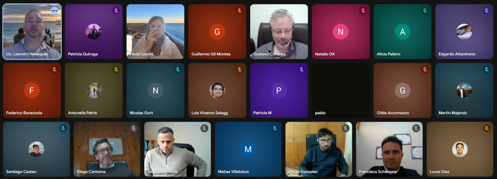

Capacitación en curso

CURSO IN COMPANY · OFICINA ANTICORRUPCIÓN DEL CHUBUT
Introducción a la inteligencia artificial
Capacitación para el equipo de la Oficina Anticorrupción del Chubut, con encuentros virtuales y práctica aplicada al trabajo cotidiano.